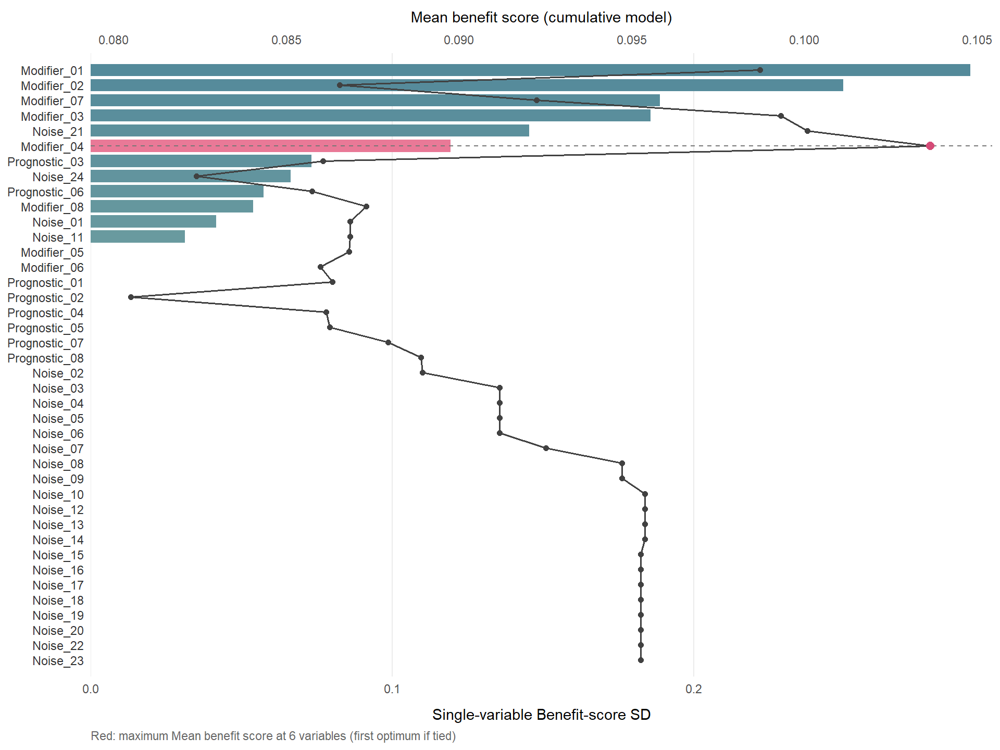
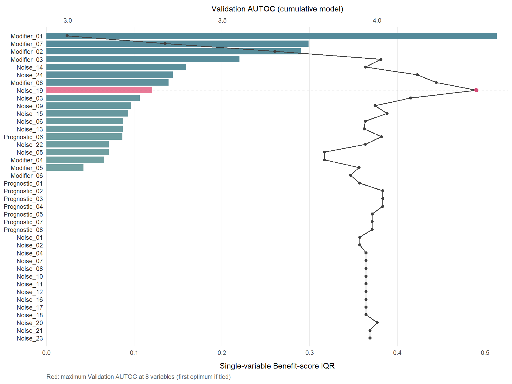

set.seed(20260928)
n <- 600L
candidates <- c(sprintf("Modifier_%02d", 1:8),
sprintf("Prognostic_%02d", 1:8),
sprintf("Noise_%02d", 1:24))
d <- as.data.frame(matrix(round(rnorm(n * length(candidates)), 3), nrow = n))
names(d) <- candidates
d$z <- sample(rep(0:1, length.out = n)) # 1:1 随机化
d$ps <- 0.5 # 已知倾向得分
benefit <- as.vector(as.matrix(d[candidates[1:8]]) %*%
c(0.8, 0.6, 0.45, 0.35, 0.25, 0.18, 0.12, 0.08))
baseline <- as.vector(as.matrix(d[candidates[9:16]]) %*%
seq(0.3, 0.05, length.out = 8))
event <- rexp(n, rate = 0.02 * exp(baseline - (2 * d$z - 1) * benefit / 2))
censor <- rexp(n, rate = 0.008)
d$time <- round(pmin(event, censor), 2)
d$DSS <- as.integer(event <= censor)
mean(d$DSS)
#> [1] 0.70333332. 效应修饰变量筛选：get_hte_select()
causalR 包函数手册
候选变量有几十个、真正修饰治疗效应的只有少数几个时，get_hte_select() 做的是 第一道粗筛：逐个候选变量拟合一个个体化获益模型、按获益得分的离散程度排序， 再沿着这个固定顺序逐步累加变量，把每一步的得分摘要（可选再加留出样本上的验证指标） 列成一张表、画成一张图，由你（或一个事先指定的指标）决定留几个。
候选变量 ──① 逐个单变量拟合──► 按 imp_metric 排序（ranking）
──② 按排序逐步累加──► 每一步的得分摘要 / 验证指标（forward）
──③ n_select 或 sel_metric──► selected它和第 1 页的 get_hte() 是两条独立的路线：
get_hte_select() |
get_hte() |
|
|---|---|---|
| 后端 | personalized::fit.subgroup()（加权法 + LASSO） |
grf 因果森林 |
| 回答的问题 | 一长串候选里哪些值得留下 | 留下的变量上效应怎样变、亚组效应多大 |
| 混杂调整 | 不建模：只接受已算好的倾向得分列，或已配好的 1:1 匹配对 | 森林内部估计倾向得分 |
| 输出 | 普通列表（排序表、累加路径、图），不保存模型 | hte_res，可交给 plt_hte_*() |
get_hte_select() 的结果不是 hte_res，不能交给 plt_hte_*()。 筛出的变量可以再放进 get_hte() 细看；但混杂变量不能因为”不是修饰变量”就从 get_hte(adj_var = ) 里删掉。
安装与核对环境
remotes::install_github("HUI950319/causalR")
install.packages("personalized") # 必需：拟合获益模型
install.packages("grf") # 可选：只有验证指标（AUTOC/QINI/损失）要用本页核对于 2026 年 9 月 28 日，代码块由本站渲染时真实执行：
| 项目 | 值 |
|---|---|
| causalR | 0.0.0.9000（GitHub main） |
| personalized | 0.2.8 |
| glmnet | 5.0 |
| grf | 2.6.1 |
示例数据：40 个候选、8 个真修饰变量
仿帮助页的模拟：一个 1:1 随机化试验（已知倾向得分 0.5），生存结局。 40 个候选里 8 个是效应修饰变量（强度从 0.8 递减到 0.08），8 个只影响基线风险， 24 个是纯噪声：
生存结局与 get_hte() 一样固定读 time 和 DSS 两列。所用各列不允许有缺失或非有限值， 函数不删行也不插补。
默认调用：只排序、不自动选
ans <- get_hte_select(d, cat_var = "z", candidate_var = candidates,
ps_var = "ps", fit_args = list(nfolds = 5L))
names(ans)
#> [1] "ranking" "forward" "selected" "plots" "analysis"
ans$selected
#> NULL默认 imp_metric = "score_sd"、sel_metric = NULL、n_select = NULL： 按获益得分的标准差排序、走完整条累加路径，但不替你选（selected 为 NULL）。
单变量排序
head(ans$ranking[, c("rank", "variable", "score_sd", "score_iqr", "score_mean")], 12)
#> rank variable score_sd score_iqr score_mean
#> 1 1 Modifier_01 0.29168728 0.42829323 0.09870626
#> 2 2 Modifier_02 0.24956742 0.31196691 0.09064391
#> 3 3 Modifier_07 0.18870121 0.25297813 0.09735624
#> 4 4 Modifier_03 0.18567344 0.23649312 0.10112796
#> 5 5 Noise_21 0.14541172 0.20132318 0.09802787
#> 6 6 Modifier_04 0.11927668 0.15673229 0.10292446
#> 7 7 Prognostic_03 0.07327202 0.09598129 0.08624172
#> 8 8 Noise_24 0.06631757 0.08939429 0.09874653
#> 9 9 Prognostic_06 0.05736282 0.08042327 0.09944379
#> 10 10 Modifier_08 0.05381436 0.07378238 0.10031584
#> 11 11 Noise_01 0.04157894 0.05843388 0.09736506
#> 12 12 Noise_11 0.03122669 0.03941614 0.097576448 个真修饰变量里，排进前 8 名的有 5 个。 最强的两个排在最前，但前 8 名里也混进了噪声和预后变量，弱修饰变量的名次也不按真实强度排列。 有 28 个候选被 LASSO 压成常数得分（score_sd 为 0）， 其中包括修饰变量 Modifier_05、Modifier_06； 它们排在末尾，并列时保持候选的输入顺序。
固定顺序的累加路径
head(ans$forward[, c("step", "added_variable", "n_vars", "score_sd",
"score_iqr", "score_mean")], 12)
#> step added_variable n_vars score_sd score_iqr score_mean
#> 1 1 Modifier_01 1 0.2916873 0.4282932 0.09870626
#> 2 2 Modifier_02 2 0.4345148 0.6308062 0.08654797
#> 3 3 Modifier_07 3 0.4784858 0.6582358 0.09224781
#> 4 4 Modifier_03 4 0.5116009 0.7161074 0.09932128
#> 5 5 Noise_21 5 0.5221468 0.7019165 0.10008567
#> 6 6 Modifier_04 6 0.5333281 0.7199506 0.10364451
#> 7 7 Prognostic_03 7 0.5492411 0.7498129 0.08606225
#> 8 8 Noise_24 8 0.5568207 0.7552145 0.08239358
#> 9 9 Prognostic_06 9 0.5265283 0.7202280 0.08574468
#> 10 10 Modifier_08 10 0.5313483 0.7291763 0.08730584
#> 11 11 Noise_01 11 0.5279876 0.7157205 0.08684739
#> 12 12 Noise_11 12 0.5279876 0.7157205 0.08684739累加时从不重排剩余候选、也从不剔除已加入的变量；第 1 步直接复用排序第一名的单变量拟合。 加入一个变量后 score_sd 下降并不稀奇：LASSO 在新的设计矩阵上重新选惩罚， 可能把已有变量的系数一起收缩。
组合图
ans$plots 里有三张 ggplot（不会自动打印或保存）：ranking、forward 和 combined。 combined 把单变量排序的条形图（下横轴）与累加路径（上横轴）对齐：
ans$plots$combined
没有设 sel_metric 时，折线画的是累加模型的平均获益得分，红色标出它的第一个最大值—— 这只是一个标记，不会写进 selected。上下两根横轴的数值没有共同尺度， 次坐标轴只是为了显示做的线性变换。
用验证指标选模型大小
imp_metric 或 sel_metric 取 "autoc"、"qini"、"r_loss"、"dr_loss" 之一时， 验证模式自动打开：
- 按
eval_args$train_frac（默认 0.5）把样本切成训练与评估两半 （PS 路线按处理臂分层，匹配路线整对切分）； - 所有 personalized 模型只在训练半拟合，对评估半预测获益得分；
- 在评估半上拟合一片固定的 grf 森林（生存结局用
causal_survival_forest()）， 用它的双稳健得分评估每个模型的得分排序：AUTOC、QINI 是 RATE 点估计（不做 bootstrap）， 连续结局另给 R-loss 与 DR-loss。
val <- get_hte_select(d, cat_var = "z", candidate_var = candidates,
ps_var = "ps",
imp_metric = "score_iqr", sel_metric = "autoc",
fit_args = list(nfolds = 5L),
eval_args = list(time = 24, num.trees = 500L))
val$selected
#> [1] "Modifier_01" "Modifier_07" "Modifier_02" "Modifier_03" "Noise_14"
#> [6] "Noise_24" "Modifier_08" "Noise_19"
head(val$forward[, c("step", "added_variable", "n", "n_eval", "score_iqr",
"autoc", "qini")], 10)
#> step added_variable n n_eval score_iqr autoc qini
#> 1 1 Modifier_01 300 300 0.5133470 2.997737 0.9001096
#> 2 2 Modifier_07 300 300 0.5897451 3.313619 0.9645972
#> 3 3 Modifier_02 300 300 0.7877517 3.669050 1.3353473
#> 4 4 Modifier_03 300 300 0.7230083 4.011668 1.4745113
#> 5 5 Noise_14 300 300 0.6926148 3.961692 1.4142799
#> 6 6 Noise_24 300 300 0.6758360 4.129161 1.4748842
#> 7 7 Modifier_08 300 300 0.7038069 4.190920 1.4464837
#> 8 8 Noise_19 300 300 0.7172253 4.320192 1.4187631
#> 9 9 Noise_03 300 300 0.7719328 4.108137 1.2916637
#> 10 10 Noise_09 300 300 0.8302703 3.992744 1.2714174生存验证需要 eval_args$time，单位与 time 列相同；target 默认 "RMST"， 所以 AUTOC 与 time 同单位。AUTOC 在第 8 步取到最大， 选出的 8 个变量里有 3 个是纯噪声。 这些 RATE 点估计不带标准误（R = 0），相邻两步的差异是否超出抽样误差，函数不作判断。
val$plots$combined
设了 sel_metric 后，组合图的折线换成该指标，红色标出被选中的那一步； 手工给 n_select 时另画一条蓝色点线，n_select 优先于 sel_metric。
警告验证指标选出来的不是无偏的最终表现
同一个评估半既用来挑模型大小（或排序），又报告挑中那一步的指标， 所以胜出的 AUTOC 偏乐观。要评估整个筛选流程，需要独立测试集或外层重抽样； 函数不做这一步，也不会把选中的模型在全样本上重拟合。 一步要成为”合格”的候选，只需训练得分不是常数，且（对有基线的指标）严格优于无异质性的基线 （AUTOC / QINI / score_sd / score_iqr 的基线是 0）——这只是最低门槛，不是显著性检验。
换种子看筛选稳定性
验证模式下 seed 同时决定切分，所以换种子重复调用，相当于对整个筛选流程重抽样。 被选中的频率描述的是筛选的稳定性，不是测试集表现：
picks <- lapply(1:5, function(s) {
get_hte_select(d, cat_var = "z", candidate_var = candidates, ps_var = "ps",
imp_metric = "score_iqr", sel_metric = "autoc",
fit_args = list(nfolds = 5L),
eval_args = list(time = 24, num.trees = 500L),
seed = s)$selected
})
lengths(picks)
#> [1] 3 8 4 5 3
freq <- table(factor(unlist(picks), levels = candidates)) / length(picks)
head(sort(freq, decreasing = TRUE), 12)
#>
#> Modifier_01 Modifier_03 Modifier_02 Modifier_07 Noise_21 Modifier_04
#> 1.0 1.0 0.8 0.6 0.4 0.2
#> Noise_04 Noise_10 Noise_24 Modifier_05 Modifier_06 Modifier_08
#> 0.2 0.2 0.2 0.0 0.0 0.0连续与二分类结局
surv 换成列名即可。连续结局可以用 R-loss / DR-loss 这两个替代损失选模型大小（越小越好）； 二分类和生存结局的原始获益得分不是风险差或 RMST 差，不能用这两个损失，会直接报错。
d$y <- round(1 + as.vector(as.matrix(d[candidates[9:16]]) %*%
seq(0.6, 0.1, length.out = 8)) +
d$z * benefit + rnorm(n), 3)
cy <- get_hte_select(d, cat_var = "z", candidate_var = candidates,
surv = "y", ps_var = "ps", sel_metric = "r_loss",
fit_args = list(nfolds = 5L),
eval_args = list(num.trees = 500L))
cy$selected
#> [1] "Modifier_04" "Modifier_03" "Modifier_01" "Modifier_02"
head(cy$forward[, c("step", "added_variable", "score_sd", "autoc",
"r_loss", "dr_loss")], 8)
#> step added_variable score_sd autoc r_loss dr_loss
#> 1 1 Modifier_04 0.4452691 0.3714279 2.398824 9.595298
#> 2 2 Modifier_03 0.6117454 0.7313936 2.268387 9.073549
#> 3 3 Modifier_01 0.6859945 0.6616043 2.236615 8.946462
#> 4 4 Modifier_02 0.7447687 0.7456149 2.172494 8.689976
#> 5 5 Noise_20 0.7530553 0.7053998 2.219296 8.877183
#> 6 6 Noise_15 0.7779856 0.6636944 2.234155 8.936622
#> 7 7 Prognostic_02 0.7862016 0.6709235 2.233981 8.935922
#> 8 8 Noise_14 0.8057766 0.6050001 2.283735 9.134939连续结局下，加权法的平方损失把处理编码成 −1/+1，总体最优的获益得分是均值差的一半， 所以两个损失都用 tau = 2 * benefit.score 计算。它们是替代损失，不是个体效应的真实误差。
两条混杂处理路线
ps_var 与 match_var 必须且只能给一个，函数内部不拟合倾向得分、也不做匹配：
| 路线 | 参数 | 数据要求 | 交叉验证折 |
|---|---|---|---|
| 倾向得分 | ps_var |
一列已算好的处理概率，严格在 (0, 1) 内；随机试验就是常数 | 按”处理臂 × 事件（或结局类别）“分层发折，所有模型共用；任何训练折缺臂或缺事件时提前报错 |
| 1:1 匹配 | match_var |
标识匹配对的列，每对恰好一个处理、一个对照（例如 get_PSM() 的 s_nearest，只保留匹配上的行） |
由 personalized 按对发折，不能事先固定 |
倾向得分应当在不看结局的情况下构造，否则会把结局信息漏进筛选。 无论哪条路线，匹配或双稳健得分都不能消除未测混杂。
参数
| 参数 | 默认 | 说明 |
|---|---|---|
data |
— | 数据框；所用各列不得缺失 |
cat_var |
— | 二分类处理列，规则同 get_hte()（第二个水平是治疗组） |
candidate_var |
— | 候选修饰变量；数值、逻辑、因子、字符均可，常数列被拒绝；分类变量的哑变量列作为一个整体进出 |
surv |
TRUE |
TRUE 读 time + DSS（Cox 损失）；列名为连续（平方损失）或 0/1 二分类（logistic 损失）；FALSE 不支持 |
match_var / ps_var |
NULL |
两条路线二选一，见上 |
n_select |
NULL |
手工指定保留前几个；优先于 sel_metric，但 sel_metric 的最优步仍会报告 |
imp_metric |
"score_sd" |
单变量排序指标，见下表 |
sel_metric |
NULL |
累加路径上的选择指标；NULL 为不自动选 |
fit_args |
list(nfolds = 10L, standardize = TRUE) |
LASSO 惩罚交叉验证的折数（至少 3）与是否标准化；可只覆盖其中一项 |
eval_args |
list(train_frac = 0.5, adjust_var = NULL, target = "RMST", time = NULL, num.trees = 2000L) |
验证模式的设置；adjust_var 是评估森林额外调整的列（必要的混杂放这里），time 在生存验证时必填 |
seed |
123L |
所有拟合（及验证切分）的种子；结束后恢复调用者的随机数状态 |
verbose |
FALSE |
逐个报告正在拟合的变量与累加步 |
指标
| 指标 | 类型 | 方向 | 说明 |
|---|---|---|---|
score_sd |
描述（训练样本） | 越大越好 | 获益得分的标准差（默认排序指标） |
score_iqr |
描述 | 越大越好 | 四分位距，对极端得分更稳健 |
score_mean_abs |
描述 | 越大越好 | 得分绝对值的均值 |
score_median、score_mean |
描述 | 越大越好 | 得分的中位数、带符号均值（位置指标，没有基线） |
autoc、qini |
验证 | 越大越好 | 评估半上的 RATE 点估计，可以为负 |
r_loss、dr_loss |
验证（仅连续结局） | 越小越好 | 评估半上的替代损失 |
描述指标只是得分的摘要，不是 HR、不是绝对 CATE、也不是变量重要性检验； 把得分离散度或位置最大化本身，不构成预测准确的证据。
返回值
| 元素 | 内容 |
|---|---|
ranking |
每个候选一行：rank、variable、n（训练行数）、n_eval（验证行数），以及上表全部指标，按 imp_metric 排好序 |
forward |
累加路径每步一行：step、added_variable、n_vars、variables（列表列）、n、n_eval 与全部指标 |
selected |
选中的前缀变量；两个选择控制都为 NULL 时是 NULL；sel_metric 找不到合格步时是 character(0) |
plots |
ranking、forward、combined 三张 ggplot |
analysis |
结局与处理映射、损失函数、设计列映射、种子、切分行号、PS 路线的折号、best_step、sel_baseline、selected_step、依赖版本、warnings 等 |
不保留任何拟合模型、个体获益得分或输入数据。后端的警告都收进 analysis$warnings； 本机 glmnet 5.0 会对每次 Cox 拟合提示下一版的并列处理方式将改变， 所以这张表在生存结局下会很长（本例 1152 行），不代表拟合出错。
慢在哪里
默认路线要拟合 \(2p - 1\) 个模型（\(p\) 为候选数），每个都含一轮 cv.glmnet()。 personalized 0.2.8 在模型一个变量都没选中时，会写死地再重跑惩罚交叉验证最多 4 次； PS 路线的折是固定的，这几次重跑是完全重复的计算，所以全是噪声的候选反而最费时。 本页的默认调用在本机十来秒；候选上百个、样本上万时，先减 fit_args$nfolds （例如 5）再考虑其它办法。
参考文献
- Chen S, Tian L, Cai T, Yu M (2017). A general statistical framework for subgroup identification and comparative treatment scoring. Biometrics 73(4):1199–1209.
- Huling JD, Yu M (2021). Subgroup identification using the personalized package. Journal of Statistical Software 98(5):1–60.
- Yadlowsky S, Fleming S, Shah N, Brunskill E, Wager S (2025). Evaluating treatment prioritization rules via rank-weighted average treatment effects. Journal of the American Statistical Association 120(549).
- Nie X, Wager S (2021). Quasi-oracle estimation of heterogeneous treatment effects. Biometrika 108(2):299–319.
完整说明见 ?get_hte_select。